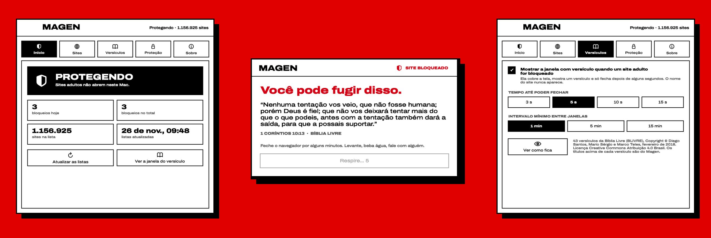

Um escudo contra a pornografia.
O Magen bloqueia mais de 1 milhão de sites adultos no Mac inteiro: em todos os navegadores e apps. Não deixa a internet lenta e não esconde fotos inocentes de pessoas vestidas. Quando bloqueia, mostra um versículo bíblico. Magen quer dizer “escudo” em hebraico.

Por que usar
Bloqueia de verdade
Mais de 1,1 milhão de sites adultos, de três listas abertas que se atualizam sozinhas todo dia.
Mac inteiro
Vale para Safari, Chrome, Firefox e qualquer app, não só para um navegador.
Não fica lento
Ele só vê o nome do site, nunca o conteúdo das páginas. A diferença é de 1 milésimo de segundo.
Sem bloqueio bobo
Não olha fotos, então não esconde pessoas vestidas como alguns filtros fazem.
Versículo na hora certa
Quando um site é bloqueado, a tela fica vermelha e aparece um versículo. O nome do site nunca aparece.
Difícil de burlar
Liberar um site pede uma frase, a senha do Mac e só vale 1 hora depois. Bloqueia o “DNS seguro” dos navegadores.
Como funciona
Bloqueio
- Antes de abrir um site, o Mac pergunta o endereço dele. O Magen responde “não existe” para sites adultos.
- Listas abertas: OISD NSFW, Block List Project e StevenBlack.
- Os outros sites são consultados na Cloudflare (1.1.1.1).
Versículos
- 43 versículos da Bíblia Livre, com um título curto em cima, como “Você pode fugir disso.”
- O botão só funciona depois de alguns segundos (3 a 15, você escolhe).
- Dá para desligar na aba Versículos.
Contra burla
- Liberar site: frase + senha + espera de 1 hora.
- Sites com nome claramente adulto nunca podem ser liberados.
- Remover o Magen pede uma frase e a senha do Mac.
Limites honestos
- Bloqueia a maioria, nunca 100%: sites novos surgem todo dia.
- Quem tem a senha de administrador consegue desligar.
- Uma VPN ligada pode passar por fora.
Novidades
Como instalar
- Baixe o Magen (arquivo
.dmg). - Abra o arquivo e arraste o Magen para a pasta Aplicativos.
- Abra o Magen pelos Aplicativos. Na primeira vez, o Mac avisa que não consegue verificar o app, porque ele é gratuito e não passou pela loja da Apple. Abra Ajustes do Sistema → Privacidade e Segurança, role até o fim e clique em Abrir Mesmo Assim.
- Clique em Ligar a proteção e digite a senha do Mac. Pronto.
Precisa de
- Mac com chip Apple (M1 ou mais novo) e macOS 13 ou mais novo.
- A senha de administrador do Mac, para ligar a proteção.
Antes de ligar
- Desligue a Retransmissão Privada do iCloud (Ajustes do Sistema › seu nome › iCloud). Com ela ligada, alguns apps ficam sem internet. O Magen avisa e ajuda.
Privacidade
O Magen não tem conta, não coleta dados e não guarda a lista dos sites que você visita. Ele só conta quantos bloqueios aconteceram, no seu próprio Mac. Usa a internet para baixar as listas de bloqueio uma vez por dia.
Apoie o Magen
O Magen é e vai continuar grátis. Fiz ele sozinho, com carinho, para quem quer vencer essa luta. Se ele te ajudou, qualquer valor ajuda muito. Obrigado de coração! — Mateus
e2a1f4a9-ebfe-4c3c-a531-92a0e7433f14